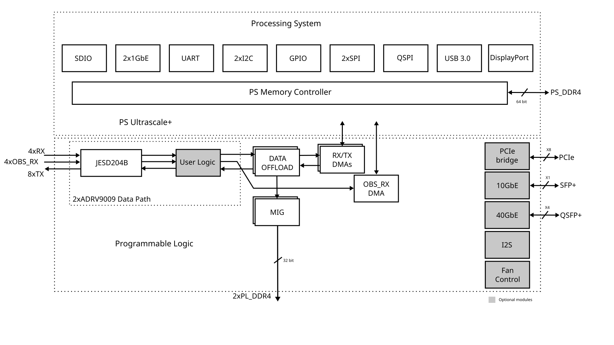
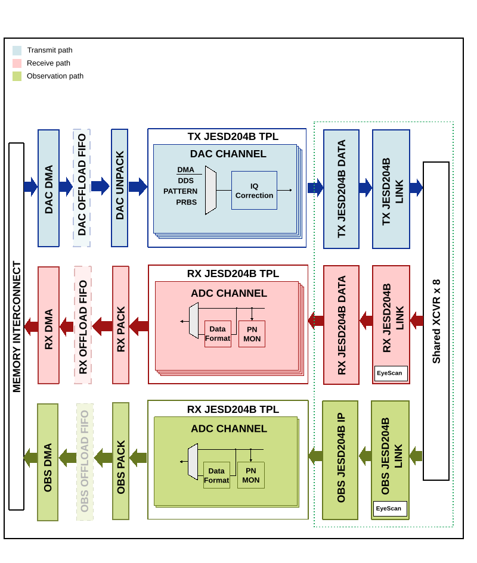

ADRV9009-ZU11EG User Guide
Introduction
The ADRV9009-ZU11EG is a highly integrated RF System-on-Module (RF-SOM) based on the Analog Devices ADRV9009 and the Xilinx Zynq UltraScale+ MPSoC (ZU11EG). The RF-SOM is a platform for evaluation and prototyping. To use the RF-SOM, a carrier board is required. The Analog Devices ADRV2CRR-FMC carrier board is designed for this purpose.
An additional RF transceiver board (AD-FMCOMMS8-EBZ) can be fitted to the carrier to expand the system up to 8 Tx and Rx radio channels.
High-Level Specifications
Two ADRV9009 devices providing:
Quad transmitters / Quad receivers
Quad input observation receiver for DPD
Max Rx BW: 200 MHz
Max tunable Tx synthesis BW: 450 MHz
Max observation Rx BW: 450 MHz
Fully integrated fractional-N RF synthesizers
Multi-chip phase synchronization for all RF LO and baseband clocks
Tuning range: 75 MHz to 6000 MHz
Zynq UltraScale+ ZU11EG:
Quad-core ARM Cortex-A53 (up to 1.5 GHz)
Dual-core Cortex-R5 real-time processors
Mali-400 MP2 GPU (up to 667 MHz)
PCIe Gen2 x4, 2x USB 3.0, SATA 3.1, DisplayPort, 4x Gigabit Ethernet
653k system logic cells (16 nm FinFET+)
On-board memory:
PS: 4 GB DDR4 (x64) with ECC
PL: Two independent banks of 2 GB DDR4 (x32) for RF data
1 Gbit serial flash for image storage
Removable SD card
On-SOM peripherals: Ethernet PHY, USB 2.0 PHY, uSD card holder
Storage temperature: -40 C to +65 C
Operating temperature for prototyping with supplied heatsink: +25 C
Supported Devices
Supported Carriers
ADRV2CRR-FMC Carrier Board
Hardware
Connector Interface
The interface to the ADRV9009-ZU11EG consists of two SAMTEC SEARAY 400-pin female connectors (P1 and P2).
P1 Connector:
24x GTH transceiver lanes with reference clock inputs
Reference clock and synchronization inputs for on-board HMC7044 clock generator
Analog and digital I/O signals from two on-board ADRV9009 transceivers
Dedicated SPI bus for ADRV9009 and HMC7044
ZU11EG programmable logic GPIOs
Power fault signals (PWR_FAULT1, PWR_FAULT2)
P2 Connector:
ZU11EG PL GPIOs and PS MIO pins
ZU11EG GTR lanes
SD 3.01 memory card interface
MDI interface to Marvell 88E1512 Ethernet PHY
USB 2.0 interface to Microchip USB3320C PHY
ZU11EG JTAG interface and configuration pins
I2C interface for ADM1266 power sequencer
Power good signals and 12 V power input
Power
The ADRV9009-ZU11EG is powered from a single 12 V supply (12 V +/- 8%, 120 W). The board features:
ADM1177 hot-swap controller for safe board insertion, with digital current and voltage monitoring via 12-bit ADC over I2C
ADM1266 voltage sequencer/supervisor that monitors input voltage, controls power-up sequence, supervises internal supplies, and monitors on-board temperature (PWR_FAULT1 at 65 C, shutdown at 90 C)
Interfaces
RGMII Ethernet: On-board Marvell 88E1512 10/100/1000 Mbps PHY connected to GEM3 controller
USB: USB 2.0 via on-board USB3320 ULPI transceiver; USB 3.0 via PS-GTR transceivers
Gigabit serial: PS-GTR (up to 6 Gb/s) for USB 3.0, SGMII, DisplayPort; GTH (up to 12.5 Gb/s) for additional JESD lanes, 100 Gb Ethernet, PCIe
SD card: Compatible with SD 3.01, UHS-I speeds, SDXC capacity format. On-board uSD connector with option for carrier SD card via multiplexer.
Thermal Considerations
The RF-SOM requires active cooling with an AMD-type SP3/TR4/sTRX4 socket cooler. Without a fan, the RF-SOM will shut down within minutes under normal operating conditions due to overtemperature protection at 90 C.
ADRV2CRR-FMC Carrier Board
The ADRV2CRR-FMC carrier board provides common high-speed I/O ports for evaluating the ADRV9009-ZU11EG RF-SOM. It includes a 12 V, 145 W power supply that powers the complete prototyping platform.
Boot Mode Configuration:
Slide switches S13-S16 select the boot source:
Mode Pins [3:0] |
Boot Source |
|---|---|
0000 |
JTAG |
0010 |
Quad-SPI (32b) |
1110 |
SD1 (3.0) |
FMC Connector:
The carrier includes a standard ANSI/VITA 57.1 FMC HPC connector (P1) with:
10 serial transceiver lanes, 2x reference clocks
34 differential I/O pairs, 2 differential clocks
JTAG, I2C interfaces
FMC HA and HB positions carry RF reference clock, synchronization, and ADRV9009 I/O signals for adding extra transceivers via the AD-FMCOMMS8-EBZ.
Additional Connectors:
I/O expansion connector (P25): 12 single-ended GPIOs (PL bank 65, 1.8 V)
PMOD connector (P10): 2x6 pin, 3.3 V, with FXLA108 level translator
Quick Start

Required Software
SD card (16 GB or larger) imaged with the latest Kuiper Linux release
A UART terminal (PuTTY / Tera Term / Minicom), baud rate 115200 (8N1)
Required Hardware
ADRV9009-ZU11EG SoM board
ADRV2CRR-FMC carrier board
Micro-USB cable
Ethernet cable
12 V power supply (145 W, included with carrier kit)
Optionally: reference clock source, USB Type-C multiport hub, USB keyboard and mouse, DisplayPort compatible monitor
Hardware Setup
Connect the ADRV9009-ZU11EG SoM to the ADRV2CRR-FMC carrier board.
Connect the 12 V power supply to P11.
Connect USB UART P8 (Micro USB) to your host PC.
Connect fan to P9.
Insert SD card into socket P15.
Configure the ADRV2CRR-FMC for SD boot using S13, S14, S15, S16.
Configure boot source using S9 to boot from the carrier SD card.
Turn on the power switch using S12.
Optionally connect test and measurement equipment to U.FL RF ports.
Observe kernel and serial console messages on your terminal (use the first ttyUSB or COM port registered).
Expected Boot Messages
After power-on, the UART terminal will display U-Boot and Linux kernel boot messages. The key messages to look for:
adrv9009 spiX.0: adrv9009 Rev 192, ... successfully initialized via jesd204-fsmconfirms both ADRV9009 devices initialized successfully.
After boot completes, log in with:
Username:
analogPassword:
analog
Verifying Operation
Verify all IIO devices are present:
iio_info | grep iio:device
Expected output:
iio:device0: ams
iio:device1: hmc7044-car
iio:device2: adm1177
iio:device3: hmc7044
iio:device4: adrv9009-phy
iio:device5: adrv9009-phy-b
iio:device6: axi-adrv9009-rx-obs-hpc (buffer capable)
iio:device7: axi-adrv9009-tx-hpc (buffer capable)
iio:device8: axi-adrv9009-rx-hpc (buffer capable)
Verify clock chip lock status on the SoM:
iio_attr -q -D hmc7044 status
Expected output shows both PLLs locked:
--- PLL1 ---
Status: Locked
Using: CLKIN1 @ 122880000 Hz
PFD: 7680 kHz
--- PLL2 ---
Status: Locked (Unsynchronized)
Frequency: 2949120000 Hz
SYSREF Status: Valid & Locked
SYNC Status: Unsynchronized
Lock Status: PLL1 & PLL2 Locked
Verify JESD204B link status:
TERM=vt100 jesd_status -s
Expected output shows all links enabled with DATA status:
(DEVICES) Found 3 JESD204 Link Layer peripherals
(0): 84a30000.axi-jesd204-tx
(1): 84a50000.axi-jesd204-rx
(2): 84a70000.axi-jesd204-rx
(STATUS) (0) (1) (2)
Link is enabled enabled enabled
Link Status DATA DATA DATA
Measured Link Clock 122.881 245.761 122.881
Reported Link Clock 122.880 245.760 122.880
Lane rate 4915.200 9830.400 4915.200
Lane rate / 40 122.880 245.760 122.880
LMFC rate 7.680 7.680 3.840
SYSREF captured Yes Yes Yes
SYSREF alignment error No No No
SYNC~ deasserted
Note
The default display output for this project uses DisplayPort (not HDMI). If using a local display, ensure a DisplayPort monitor is connected.
IIO Oscilloscope Remote
The IIO Oscilloscope application can be used to connect remotely to the platform from a network-enabled Linux host.
Build and start the IIO Oscilloscope on your host PC.
Go to Settings > Connect and enter the IP address of the target.
Note
This is a persistent filesystem. Always shut down properly from the
terminal (sudo shutdown -h now) before disconnecting power, otherwise
the SD card may be corrupted.
HDL Reference Design
The HDL reference design is built around the Zynq UltraScale+ quad Cortex-A53 MPCore processors. The PS provides SDIO, UART, Ethernet, SPI, USB 3.0, QSPI, and DisplayPort control modules.
The two ADRV9009 digital interfaces are handled by the JESD204B physical, data link, and transport layer IPs. The JESD204B lanes are shared among the 8 transmit, 4 receive, and 4 observation/sniffer receive data paths. The cores are programmable through an AXI-Lite interface.
Two PL DDR4 (32-bit @ 1200 MHz) modules can be used as offload FIFOs. Additional transceiver lanes are available to implement PCIe Gen3 x8, 10 Gb Ethernet, and 40 Gb Ethernet simultaneously. A full FMC HPC connector enables extending the system with another two ADRV9009 devices.
Digital Interface
The digital interface consists of 8 transmit, 4 receive, and 4 observation/sniffer lanes running up to 9.8 Gbps. The transceivers interface to the cores at 256 bits @ 245 MHz in the transmit path and 128 bits @ 245 MHz for the receive and observation paths.
TX Interface: DAC data may be sourced from an internal data generator (DDS or pattern) or from external DDR via DMA. The UNPACK IP (util_upack) allows transferring data from the DMA to a reduced number of channels at a higher rate.
RX Interface: ADC data is sent to DDR via DMA. The PACK IP (util_cpack) allows capturing only a subset of channels.
OBS Interface: Observation data is sent to DDR via DMA with similar PACK IP support.
Block Diagrams


HDL Source Code
Multi-SOM Synchronization
Multiple ADRV9009-ZU11EG RF-SOMs can be synchronized together for complex multi-stream applications with deterministic latency. Synchronization is accomplished by phase-aligning the SYSREF and REFCLK signals using HMC7044 high-performance jitter attenuators. Phase alignment is achieved by pulsed SYNC or RFSYNC inputs, which can be extended to multiple clock tree stages.
Two synchronization architectures are supported:
Clock Distribution: The first-stage HMC7044 generates and distributes the clock. Lower-stage HMC7044 devices act as fanout buffers. Easier to manage and lower power, but requires routing high-frequency clock signals.
Reference Distribution: All HMC7044 stages have active PLLs working as clock generators and jitter cleaners, synchronized by the SYNC input. Provides ultralow jitter and reduces coupling risk.
With a single HMC7044 synchronization board, up to three carriers (twelve ADRV9009 transceivers) can be synchronized.
Software Support
Linux Device Driver
More Information
Support
Analog Devices will provide limited online support for anyone using the reference design with Analog Devices components via the FPGA Reference Designs Forum.